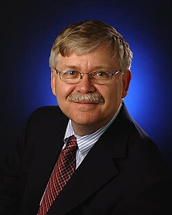

Steven J. Dick
NASA chief historian, born 1949

An astronomer and historian of science who worked at the U.S. Naval Observatory from 1979 to 2003, served as NASA's chief historian from 2003 to 2009, and held the NASA and Library of Congress chair in astrobiology in 2013 and 2014. He helped define astrobiology as a field and set up the NASA Astrobiology Institute. 1
His history of the 20th-century debate over alien life, The Biological Universe, gives the UFO controversy its own chapter, treating it as part of how scientists argued about life beyond Earth rather than as a fringe topic. 2
Open in the interactive Watcher
Related
- NASA NASA chief historian
- The Biological Universe Wrote The Biological Universe
Sources
- Steven J. Dick Wikipedia
- The Biological Universe (catalog record and contents) National Astronomical Observatory of Japan Library